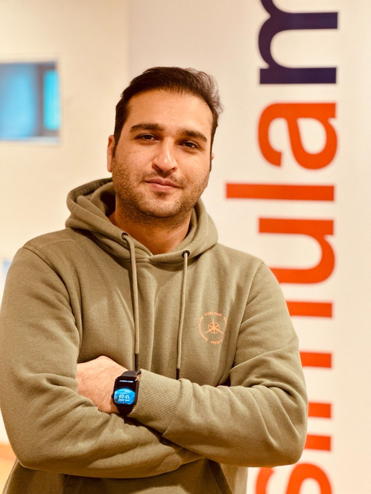

Building data-driven solutions for maritime innovation at Jotun — from predictive hull maintenance in Hull Skating Solutions to production AI systems and computer vision.

Data Engineer at Jotun working on Hull Skating Solutions (HSS) — a groundbreaking approach to proactive hull cleaning and performance monitoring. With 5+ years of experience, my background spans data engineering, production AI systems, backend services, and optimization algorithms.
I hold a Master's degree in Applied Computer and Information Technology with an AI specialization from Oslo Metropolitan University, where my thesis on AI-based sports video cropping earned the top grade and produced peer-reviewed publications at IEEE and ACM conferences.
My background bridges Computer Science, Industrial Engineering, and Artificial Intelligence — allowing me to connect technical implementation with real-world problem solving.
Jotun Hull Skating Solutions utilises proactive cleaning to combat early-stage fouling and maintain an always-clean hull. The solution combines five key elements: SeaQuantum Skate high-performance coatings, proactive condition monitoring with fouling prediction, the HullSkater robotic cleaner, high-end technical service, and a clean hull guarantee — verified by DNV with no measurable speed loss.
Production chatbot serving 4 Nordic countries. Spring Boot + GPT-4o + pgvector for semantic search over HR documents via SharePoint/Microsoft Graph API. Admin panel for document management.
This demo is CV-based — a small-scale version of the Allente HR chatbot.
Subscription data sync across 6+ streaming platforms — Amazon Prime, Viaplay, TV2 Play — handling user provisioning, entitlements, and real-time status.
Extended API gateway with new endpoints for Boost.ai chatbot and voice bot integration, configuring API connectors for customer service automation. Implemented GraphQL and REST APIs across microservices for customer data retrieval.
Metaheuristic optimization for routing emergency responders in earthquake scenarios. Mathematical models balancing response time, resource allocation, and coverage.
End-to-end system for automatic cropping of sports videos (soccer and ice hockey) for social media. Fine-tuned YOLOv8/v9 and RT-DETR for real-time focal point detection. Built a Flask GUI with interpolation, outlier controls, and platform-specific aspect ratios. Resulted in 6 publications, 99+ citations, and a Best Paper Award nomination at ACM MMSys 2024.
I'm currently working as a Data Engineer at Jotun on Hull Skating Solutions in Sandefjord. Open to connecting about data engineering, AI, and maritime technology.